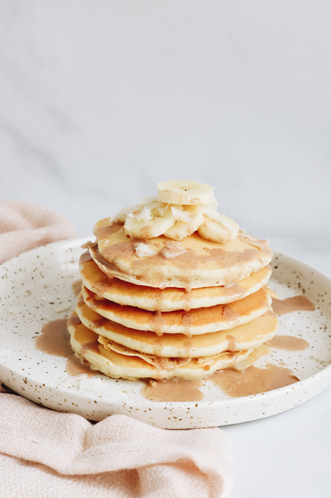

Good Old Fashioned Pancakes

Perfectly cooked pancakes topped with bananas and maple syrup.
Ingredients
- 1 1/2 cup all-purpose flour
- 3 1/2 teaspoons baking powder
- 1/4 teaspoon salt, or more to taste
- 1 tablespoon white sugar
- 1 1/4 milk
- 1 egg
- 3 tablespoons butter, melted
Steps
Step 1
In a large bowl, sift together the flour, baking powder, salt and sugar.
Make a well in the center and pour in the milk, egg and melted butter; mix until smooth.Step 2
Heat a lightly oiled griddle or frying pan over medium-high heat.
Pour or scoop the batter onto the griddle, using approximately 1/4 cup for each pancake.
Brown on both sides and serve hot.